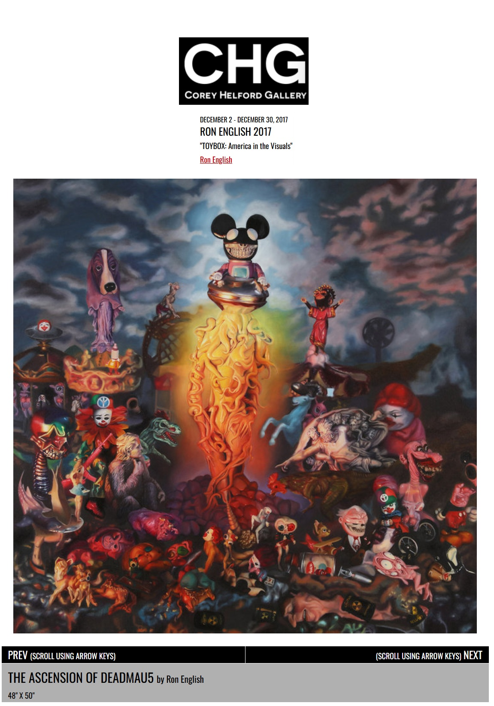
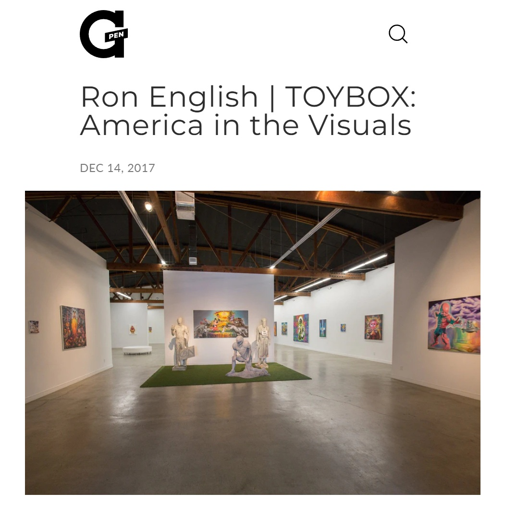

Exhibitions
TOYBOX: America in the Visuals, Corey Helford Gallery, Los Angeles, California, US, December 2–30, 2017.
Literature
Ron English, Original Grin: The Art of Ron English (Paris: Cernunnos, 2019), p. 248. ISBN 978-2374950938.
Notes
Also known as The Ascension of deadmau5.
This work appears on Corey Helford Gallery’s artwork page for the exhibition TOYBOX: America in the Visuals, available here, accessed April 11, 2026.
It also appears in Dangerous Minds’ feature “POPaganda: New work by pop-art provocateur Ron English,” published November 29, 2017, available here, accessed April 21, 2026.
It also appears in L.A. TACO’s preview “Ron English ‘TOYBOX: America in the Visuals,’” published November 21, 2017, available here, accessed April 21, 2026.
It also appears in G Pen’s news post “Ron English | TOYBOX: America in the Visuals,” published December 14, 2017, available here, accessed April 21, 2026.

Ancillary Documentation

